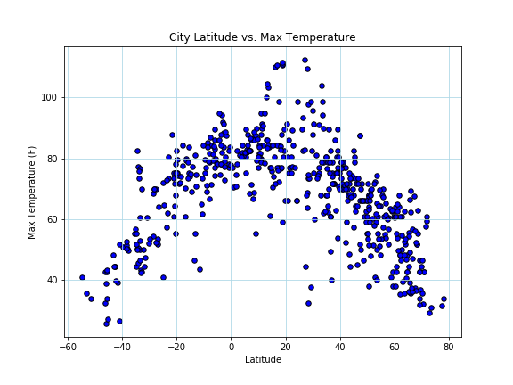

Max Temperature

Quickly viewing this chart shows that Temperature has a strong negative relationship with Latitude. That is, as Latitude increases, Temperature decreases in a predictable way.
One consideration to note with this data is the appearance of clustering in the scatter plots for cities with positive value Latitudes (Northern Hemisphere). The Northern Hemisphere has significantly higher land mass than the Southern Hemisphere, and thus there are not as many cities present in the Southern half of the Earth than in the Northern half. This means that when I randomly selected cities from the World Cities database (cities.csv), a higher number of them were from the Northern Hemisphere, giving the clustering affect seen in some of the Scatter Plots.
Visualizations